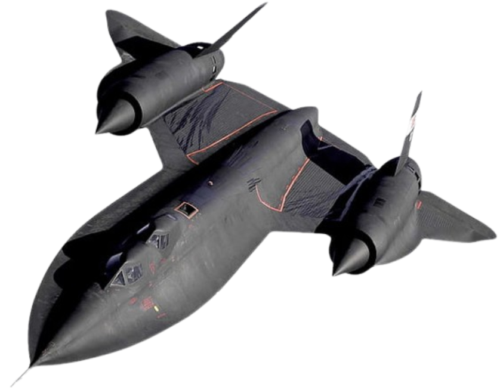

SR-71 Blackbird
SR-71 Blackbird

Primary function: Strategic reconnaissance
Manufacturer: Lockheed (Skunk Works)
First flight: December 22, 1964
Entered service: 1966
Retired: 1998 (USAF) / 1999 (NASA)
Crew: 2 (pilot, reconnaissance systems officer)
Dimensions:
- Length: 107.4 ft (32.74 m)
- Wingspan: 55.6 ft (16.94 m)
- Height: 18.5 ft (5.64 m)
Weight:
- Empty weight: ~67,500 lbs (30,600 kg)
- Maximum takeoff weight: 170,000 lbs (77,100 kg)
Performance:
- Engines: 2 × Pratt & Whitney J58 turbojet/ramjets
- Thrust: 34,000 lbf (151 kN) each with afterburner
- Maximum speed: Mach 3.3+ (~2,200 mph / 3,540 km/h at 85,000 ft)
- Cruise speed: Mach 3.2
- Range: ~2,900 miles (4,667 km) without refueling
- Ferry range: Unlimited with air-to-air refueling
- Service ceiling: 85,000+ ft (25,900 m)
- Rate of climb: Classified (estimated >11,000 ft/min)
Special features:
- Titanium airframe (to withstand extreme heat at Mach 3+)
- Fuel (JP-7) doubled as coolant and hydraulic fluid
- Skin panels intentionally loose on the ground (sealed in flight from heat expansion)
Armament:
- None (unarmed reconnaissance aircraft)
- Equipped with advanced cameras, sensors, and electronic surveillance gear
Notable:
- Could literally “outrun” missiles by accelerating and climbing
- Still holds the record for fastest air-breathing manned aircraft
- Nicknamed **“Habu”** by crews in Okinawa
Go back to P-51 Mustang
->